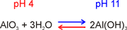
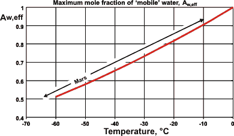

The Universe is full of life, but it always needs water to initiate and evolve.
 How many planets have life in the Universe
How many planets have life in the Universe
It is unnatural in a large field to have only one stalk of wheat.
and in the infinite universe only one living world
Metrodorus, c. 400 BC
Astrobiology is the study of the origin and evolution of life on Earth and its expectation and possibilities throughout the Universe.
Spiral galaxy
The age of the Universe is about 13.8 Ga (from the 'Big Bang'), with our galaxy (the Milky Way) 13.6 Ga, the Sun 4.6 Ga, and our solar system 4.57 Ga. Water molecules were first formed after the first star formed the first supernova, probably still over 13 Ga. The Earth is about 4.54 Ga, but at 4.5 Ga, it was hit by a Mars-sized hypothetical planet (Theia) that blasted an enormous amount of debris that formed the Moon. Any life that started before this massive collision would have died out with new life originating and evolving later. Many stars had formed before our Sun. Life has probably arisen (and perhaps been lost) many times before us, throughout the Universe as there are many planets around other stars.
In space, there is not a perfect vacuum. We find water throughout the Universe, primarily as free molecules and amorphous ice. Its spectroscopy may be viewed by orbiting telescopes, with our atmosphere blocking most spectroscopy using land-based telescopes. The astrochemistry of water has been reviewed [2615]. At temperatures below 180 K, water is a stable solid. At pressures below about a 10−9 Pa (such as on the surface of the Moon), solid ice is the stable phase as it will not sublime below 124 K. Gaseous and sublimed water will tend to attach itself to mineral surfaces rather than escaping as a gas, which will stabilize it somewhat from sublimation. Of crucial importance for a habitable planet is the presence of liquid water, necessitating an atmosphere and the required temperature range. For life to start, there must also be organic matter, either made locally or delivered from space.
[Back to Top  ]
]
Water was essential in the formation of the Solar System. The inner planets, Mercury, Venus, Earth, and Mars, are mainly rocky as, on their formation, water could not condense. This was due to the hot temperatures within about twice the distance of the Earth to the Sun. The Earth containis vastly more water than the traces found on Mercury, Venus, Mars, or the Moon. The outer planets, Jupiter, Saturn, Uranus, and Neptune, have large diameters, low densities, and numerous satellites and ring systems. They were formed by accretion from solid particles and condensed. water [3120]. Water is found on both Enceladus (the sixth-largest moon of Saturn) and Europa (the smallest of the four Galilean moons orbiting Jupiter). Water is a major constituent of the comets (≈ 80%) and the outer Solar System where we find water vapor in the interiors and stratospheres of these giant planets.
In our solar system, the evolution of giant planets supported the existence of a habitable Earth by scattering water-rich planetesimals into the inner Solar System, allowing accretion by the Earth, and by orbiting away from the Earth without great eccentricity. Thus the Earth remained in a stable orbit with a stable climate [2522].
[Back to Top  ]
]
Hydrogen was the first element to be produced (≈ 105 yr) after the 'Big Bang'. Much later (≈ 108 yr), carbon and oxygen were made by fusion reactions inside stars. Hydrogen, helium, and oxygen remain the three most common elements in the Universe. It is no surprise that hydrogen and water molecules are the two most abundant molecules in the Universe, with water occurring in interstellar space, on planets and asteroids, and within the atmospheres of stars like our Sun. Synthesis of H2O is initiated by the ionization of H2 by cosmic-ray protons. This is followed by reaction with oxygen atoms. Water is the commonest molecule on the surface of planet Earth.
The Earth contains about 1% w/w water, but only about 2% of this (≈ 1018 m3) makes up our surface oceans, seas, lakes, rivers, clouds, and part of our air, with the rest hidden in Earth's mantle and core. This water in the hydrosphere and atmosphere has allowed life to develop, but there has been much and continuing debate over how it arrived on our planet [2518].
The early Solar System
The likely possibilities are
a) It was there when planet Earth formed, ≈ 4.54 ˣ 109 years ago (4.54 Ga), mostly accumulated from the cloud of dust surrounding the young Sun [3740, 4061].
b) It arrived soon afterward from an accumulation of water-containing rocky asteroids, ≈ 4.5 ˣ 109 years ago (4.5 Ga)
c) It arrived somewhat later from icy comets, ≈ 4 ˣ 109 years ago (4 Ga)
Indeed, most of the water was present by ≈ 3.8 ˣ 109 years ago (3.8 Ga), when there are signs of planetary life. The source of this water has been attributed on the basis of the known isotopic ratio (D/H) of water found on the Earth and Moon [2649], and the analyzed comets and asteroids [2519]. If the proportions have not been altered by isotopic fractionation c over the many years, then the most likely source is water-containing rocky asteroids arriving mostly as the planet was formed and soon afterward [1015, 2172, 2173]. We think that nascent planetary systems may all have the same water resources as we did [2203]; water that formed before our Sun was born. Therefore, life is likely to be widely established throughout the Universe.
[Back to Top  ]
]
'creation of order from disorder'
Although many have tried, there is no simple definition of life [2543]. Life is far from any equilibrium state and requires the continual input of energy; it is no longer 'alive' at equilibrium. In the beginning, 'life' entailed little of what is required today within our complex ecology; just a coating to separate it from the outside world, a primary metabolism involving energy input, growth, and self-replication as there was no competition for resources. After a very slow beginning over hundreds of millions of years, competition with later-formed living beings and the necessity of new adaptations gave rise to the evolution of early life forms similar to those we have more recently [4248]. Life on Earth today is highly competitive and must show most of the following: reproduction, organization, metabolism, non-equilibrium thermodynamics, growth, protection, and adaptation. These requirements necessitate the presence of a liquid to allow ease of molecular interactions and for reactions to proceed. We now know that life requires a flow of energy within an aqueous environment [2532] (see also 'Water and life'). Life is truly remarkable, and although we understand (in outline) how it continues, we still do not know how it started.
Three-toed sloth

Carbon, nitrogen, oxygen, and hydrogen are the four most prevalent reactive elements in the Universe that are available for life. Carbon is the most important, producing an enormous range of compounds (organic chemistry). Life on Earth contains these plus many other commonly found elements. These elements (except hydrogen) are created inside stars and, if widespread, form simple compounds in space. Spacial dust particles contain up to 35% organic carbon. For creating life, molecules need to be relatively easy to create and break down, and to be relatively stable within a liquid environment. Other elements such as sulfur and silicon, cannot form the complexity of molecules necessary for life. Silicon, in particular, tends to form stable silicates.
A stable liquid medium is required for life, such as water [1011]. Other candidate liquids such as N2, H2S, NH3, a and glassy silica are liquid only at low temperatures giving slow reaction rates, or at high temperatures that are destructive and too viscous. Also, many of these putative media freeze from the bottom up which would prevent the establishment of life.
Water is an excellent solvent for salts and polar molecules. Additionally, it has an enormous cosmic abundance, a high enthalpy of vaporization, a wide area of liquidity, and a high dielectric constant; all critical attributes. Thus, mobile liquid water is necessary for the persistence of life. However, where liquid water does not exist, such as on Mars, sufficiently mobile water is still obtainable from the amorphous surfaces of ice crystals and the so-called ‘bound’ water at interfaces with potential organic molecules and inorganic salts and surfaces. Water in the crystalline ice lattice will not be directly available. The exobiological life that evolves from a liquid water-rich environment to one that is water-poor due to climatic change would need to utilize mechanisms for holding on to its precious mobile water. Such mechanisms are likely to involve highly hydrophilic molecules to prevent water from escaping and garner water molecules from the environment.
[Back to Top  ]
]
Some microbial life can continue, if slowly, under extreme conditions on Earth, such as several kilometers underground (e.g., the cryptoendoliths, see below) or at -20 °C, or 35 km above the ground. Their survival without growth is possible in liquid N2 (77 K), and dry bacterial spores have survived temperatures down to10 K (outer space). Life may have developed (and died) around stars that no longer exist. Life could, therefore, have spread around the Universe (panspermia). It has been proposed that the possible spreading of life via such spores, would be contained within galaxies due to the limits of solar photon pressure as a driving force [3619]. Microbial life from space would generally have difficulty establishing itself on a planet with already well-evolved life forms but might quickly establish itself on a planet with metabolizable substrates but no native life-forms. In any case, the origin(s) of life still presents a puzzle.
With liquid water being available on a crusted Earth by 4.1 Ga, life probably originated on Earth about 4.0 Ga. However, there is no record as no sedimentary rocks exist from that time. How life arose on Earth is unknown, maybe from Mars (see below). b How life originated anywhere is unknown. Indeed, the conditions on the early Earth would have been very hostile for most organisms that exist today, with an evolving but reducing atmosphere [2675]. Carbon dioxide dominated the early atmosphere, but with evolving amounts of ammonia, nitrogen, hydrogen, carbon monoxide, water vapor, sulfur dioxide, methane, and hydrogen sulfide but always very little oxygen. First, a chemical soup would be formed in warm water by reactions from simpler precursors, e.g., hydrogen, methane, formaldehyde, carbon dioxide, ammonia, and phosphate. Liquid water is an excellent medium for forming such inorganic and organic materials in the presence of ultraviolet light or lightning.
The Miller-Urey experiment
The Miller-Urey experimental set-up synthesized amino acids and nucleic bases, such as alanine (CH3CHNH3+CO2− ) (see right [2523]; for synthetic routes, see [2524]). Similar molecules are found in Mercury's polar ice.
Also, water ice can act as a substrate and irradiated reactant within interstellar clouds of gas and dust, enabling the formation of critical inorganic materials, such as HCN, and organic compounds, such as the carbon hydrates methanal (formaldehyde, H2C=O ), ethanoic acid (acetic acid, CH3CO2H), methyl methanoate (methyl formate, CH3OCOCH) and 2-hydroxy acetaldehyde (glycoladehyde, HO-CH2-CH=O), that are essential precursors to life. Much of this chemistry occurs in “dense” interstellar clouds and protostellar disks surrounding forming stars [4349]. These may have eventually formed part of comets and asteroids in the early Solar System [2525]. Additional organics still fall to Earth from space from meteorites and micrometeorite particles (0.02 - 0.4 mm) that currently bring 50,000,000 kg of material, containing organic carbon, to the Earth each year; intact as most float down. Much more is expected to have fallen in the far past.
Precursors of ribonucleotides, amino acids, and lipids can all be produced from hydrogen cyanide via simple organics and molecules such as glyceraldehyde [2662]. Starting with just six available primordial substrates (H2O, N2, HCN, NH3, CH4, and H2S), tens of thousands of prebiotic molecules, including fatty acids, polyaminoacids, nucleic acids, and nucleoside monophosphates, may be synthesized [4086]. The biotic molecules formed tend to be more hydrophilic, more thermodynamically stable, and more balanced in terms of the hydrogen bond donors and acceptors they contain and are synthesizable along routes with fewer changes of conditions than the majority abiotic molecules.
All cellular subsystems could have arisen simultaneously through a common chemistry, with key reaction steps driven by ultraviolet light and using hydrogen sulfide or molecular hydrogen as the reductant. The early high concentrations of hydrogen gas would have led to easier syntheses and greater stabilities than are now possible within our more hostile oxidizing environment. Early life would probably have contained the more robust molecules only. Although such reactions would benefit from catalysts, and such catalysts (such as Cu(I)–Cu(II) photo redox cycling [2662], or the Fe(II)–Fe(III) cycle mentioned below) are feasibly present, long lag periods are available on the early Earth for these materials to form in quantity without great catalysis.
In the absence of microbial life, pools of organic materials would concentrate and become more complex, perhaps in hydrothermal pores [2617]. One of the first crucial molecules must have been the autocatalyst that could reproduce itself. So long as degradative catalysts were not prevalent, these could be inorganic, such as polyphosphates, or similar to the still-extant autocatalysts RNA or protein. This process is likely to have been slowly evolving, involving a sequence of improving autocatalysts. The accepted most likely route would be through RNA-like molecules [3062].
In the beginning, 'life' entailed little of what is required today within our complex and competitive ecology; just a primary metabolism, growth, and reproduction, as there was not the competition for resources that we have today. The origin of life is likely to follow the following steps. First, energy, likely from ultra-violet light, would have been coupled to some essential reactions, catalyzed by redox minerals. Coated cells containing the energy couple were likely to grow and devide, purely by chemical reactions. Over time the catalysts would improve 'naturally', and the cells would compete for resources. Different cells would evolve to make different molecules and 'merge' to produce competitive multicomponent cells. Synthetic reactions would be more accessible then, in the reducing atmosphere, than now within our oxidizing atmosphere. ‘Cells’ would probably ‘live’ for long periods as there was a very slow breakdown at that time. The likely main building blocks for the chemical synthesis of biological molecules were formaldehyde and hydrogen cyanide, both of which were 'easily' formed at that time. Reactions would have been quicker in hot pools, but products would be less stable there unless cooled. Eventually, a type of 'RNA' formed that could both catalyze its own duplication and other reactions. Different cells with different ‘RNA’ would form communities and then merge and compete better. Eventually, life more like ours would emerge. Unfortunately, we cannot presently say whether the origin of life requires a week, a month, or a year, much less 50 million or a billion years, highlighting our ignorance of some of the critical steps in this process.
The earliest known life forms were thermophiles that could survive the more frequent violent impacts by sizeable solar system debris before 3.8 Ga with the oldest fossil microorganisms found in Greenland (in 1-4 cm high microbial communities; stromatolites [2707]), dated back to about 3.7 Ga. Such organisms would have to survive in an anoxic atmosphere until 2.4 Ga, most likely using sulfur and iron chemistry [2599].
Black smoker
Likely places for this to happen are hydrothermal vents, either underwater or, perhaps more likely, above sea level [2674]. If submarine, they can form 'black smokers' (see left) and 'white smokers', usually surrounded by a vibrant ecology. Above sea level, they are hydrothermal impact crater lakes [2711], volcanic fumaroles (see above right), or warm little pools [3062]. In such cases, there is a constant supply of warmth, water and nutrient. The temperature was important as there was a much weaker Sun than we have today. However, if above sea level, there is the addition of the atmosphere, extensive gas-liquid interfaces, sunlight and associated photochemistry, and no restriction in the distribution and loss of products in the vastness of the early oceans. Today, such fumaroles show a richer diversity of life forms than other niches even high in the Atacama desert, one of the most inhospitable places on Earth [2659]. An additional factor promoting life is likely to have been the occasional drying out of such pools [4176]. Life starting in the early abundance of fumaroles could then spread straightforwardly through rivers to the oceans.
Investigations have been made of the possible prebiotic reactions within the nano-confined conditions found in deep-sea hydrothermal vents. Here, layered mineral cracks are intercalated by water and hot high-pressure conditions occur. As a result, many reactions associated with peptide formation are found [3174].
Water seems to be crucial to the origin of life. It organizes molecules using its structure, the structure of its ices, and the interfaces between liquid water with solids and gases. Possibly, following the initial formation of methane (from H2 and CO2) clathrate hydrates under pressure, reactions within the clathrate shells with phosphate and nitrate form ribonucleic acids as the catalysts and blueprint for life [2526].
Indeed, once life starts, it continues to be water-based, with even land animals commencing their lives within aqueous environments such as eggs.
One of the features of life on Earth is the predominance of specific chiral isomers, d such as the L-amino acids and D-sugars. Chirality initially seems surprising if it arose from simple chemical reactions that usually produce equal amounts of the left- and right-handed chiral products if not in contact with a previously chiral material. Water clusters are often chiral [3164], but there are equal numbers of right and left-handed forms [2774]. It now seems likely that chiral products can be produced in a system solely driven by autocatalysis to reach global homochirality [2598]. Surprisingly, there is an excess of D-sugar derivatives such as D-gluconic acid (over the L forms) in carbonaceous meteorites that are the same age as the solar system (4.5 Ga) [2708]. The reason for the excess is undetermined, but the effect of circularly-polarized light during synthesis may be the cause, as might the asymmetric distribution of neutrinos emitted by a supernova. e
One way to attempt to discover the earliest organisms on Earth is to look within extant organisms for common ancestors of all life. After examining 286,000 gene families, the last universal common ancestor (LUCA) was found likely to have been a thermophilic, anaerobic, N2-fixing single-celled organism that lived in an oxygen-free hot spring. It fixed CO2 using H2 as an electron donor [2681]; with outline metabolism (Wood-Ljungdahl pathway) resulting in acetyl-coenzyme A:
CO2 + H2  CO + H2O
CO + H2O
CO2 + 3H2 + H-R +energy  H3C-R + 2H2O
H3C-R + 2H2O
H3C-R + CO  H3CCO≈ R
H3CCO≈ R  biomass
biomass
This LUCA is already highly sophisticated, involving the central dogma of information flow in known life,
DNA  RNA
RNA  proteins
proteins
and must have been preceded by at least two hundred million years of a wonderfully complex and, as yet, unknown evolutionary process, probably involving many false starts.
The diagram below shows what has happened during Earth's existence with biological events and geological periods. Note the extended period that prokaryotes have been around (>1011 generations, compared with just 104 generations for modern man). The two million years-long Quaternary period, the time of recognizable human ancestors, is too small to be visible at this scale. The 195,000 years of Homo Sapiens (that is, us) is represented by under a tenth of a pixel in this diagram.
Earth's geological clock
[Back to Top  ]
]
Although there is some dispute, the Universe is thought to be about 93 billion light-years across and contains something like 1011 to 1012 stars in our Galaxy, and there are perhaps something like 2 ˣ 1012 galaxies, with each star having on average one planet. Therefore there are about 1023 to 1024 planets. However, many of these will not be in their system's habitable zone [2527].
A planet in the habitable zone has no guarantee of actually being habitable. Venus and Earth are both within the Sun’s habitable zone and would appear from current exoplanet discovery techniques to be the same size and mass. Nevertheless, Venus is entirely hostile to life owing to its high surface temperatures (462 °C), whereas Earth has the correct surface temperature for liquid water with oceans teeming with life. The habitable zone could exist from about 0.5 AU to about 5 AU (would include Venus, Earth, Mars, and Jupiter in the solar system) for a solar-type star, or even beyond, depending on the planet’s interior, its mass, and its atmospheric characteristics. The existence of liquid water is probably insufficient, in itself, for life, with very deep water-covered planets being unsuitable due to the loss of material to high-pressure ice environments at depth and so restricting life forms[2574]. As such, there is no universal habitable zone applicable to all exoplanets. In all likelihood, about one in every hundred planets would be both within the zone and suitable for life. That still gives at least 1020 planets suitable for life in the Universe. Even the oceans below the icy surfaces of Jupiter's moons Europa, Callisto, and Ganymede, and Saturn's moons Enceladus and Titan may hold primitive life [3859].
Some argue that, although microbial-like life may be much more common, life as complex as on Earth is extremely rare in the Universe. In our case, it seems to require an improbable set of circumstances involving having a large moon, plate tectonics, a magnetic field, a gas giant like Jupiter for protection, and an orbit within the habitable zone of the right kind of star [2567]. However, these restrictions seem too great [2568] as our Sun is a commonly found star type (G-type main-sequence star that fuses hydrogen to helium for about 10 billion years, also known as a yellow dwarf, ≈ 10% of known stars), Jupiter-sized planets seem common at about the same position, a large moon may not be necessary, and there are many other uncertainties. Even if only one suitable planet existed per galaxy, there would still be a hundred billion suitable planets.
[Back to Top  ]
]
Martian meteorite ALH84001
The possibility of life on Mars [2527] was mooted after the Allan Hills 1.93 kg meteorite (ALH84001, found in Allan Hills, Antarctica in 1984, see right) was reported to contain possible evidence for microscopic fossils of Martian bacteria based on the carbonate globules observed (see below left).
Chain structures in ALH84001
This meteorite had formed about 4 Ga but had been blasted off from the surface of Mars by a meteoritic impact approximately 17 million years ago and fell roughly 13,000 years ago [2528] onto the Antarctic's protective environment. Thousands of other martian meteorites have landed on Earth, but this is the oldest known. The rock had many 300-micron-wide carbonate globules that must have formed in water. The tubular structure (see left) is thought by some to be the remains of a biofilm with its associated microbial community, but others have expressed doubts [2540].
Comparison of Earth and Mars
It appears that suitable conditions were available on Mars up to about 4 Ga when Mars seems to have had sufficient groundwater and atmosphere for life to evolve. However, the conditions on Mars have been much more demanding over the last billion years or so, with the loss of much of the atmosphere, the prevalence of much colder conditions, and the apparent disappearance of much of the water. However, pictures from the Phoenix Mars Lander (b, right) show ground conditions similar to those in permafrost regions of Earth where life still flourishes (a, right). Thus, athough it seems highly unlikely that life currently exists on Mars, it is possible to hypothesize life forms that could have adapted to these conditions [3132].
By analyzing the relative humidities, air temperatures, and ground temperatures from the Curiosity rover at Gale Crater on Mars, support was found for the formation of night-time transient liquid brines in the uppermost 5 cm of the subsurface that then evaporates after sunrise [2531]. The distribution of water in the ground surface is shown in this false-color map of Mars (below), where deep blue indicates water or ice deposits. Most of this water resides at the poles. Mars, today, is a frozen desert with only about 10 ml of precipitable water per square meter of surface. The atmospheric water vapor content averages only about 0.1 Pa at 220 K, with this water coming from the sublimation of the polar ice caps.
Mineral-associated water on Mars
Water is presently associated with minerals or as sub-surface deposits, with occasional flows of liquid water on the surface [2529], the formation of night-time transient liquid brines in the uppermost 5 cm of the subsurface that then evaporates after sunrise [2530], and the discovery of ice cliffs in 2018 [3159].
The biggest problem to be overcome by life on Mars is collecting and retaining the water necessary for survival. Whatever metabolism is envisaged, mobile water is required to ease molecular mechanisms.
This water must be acquired from the atmosphere and held locally, overcoming the low vapor pressure present. Organisms must then be able to access this water, utilize it as a mobile liquid and keep hold of it against adverse changes in conditions and, perhaps, substitute for it during periods of more extreme drought during such periods of dormancy as are required. There are several ways by which water can be held against extremely low vapor pressures. For example, by controlling pH, water can be held firmly by some salts for later use (e.g., Al(OH)3, see above right).
Polyacrylate
Liquid water can also be held robustly by osmotic pressure, as is utilized using super-absorbent cross-linked polyacrylate (see left) in disposable nappies. During periods of extremely low water availability, living organisms on Earth replace some of their water by organic alcohols, such as α, α,-trehalose.

On Mars, life forms would also be expected to use this process, perhaps for very extensive periods. During such periods, life forms would lie dormant as biological processes cannot continue, except perhaps at an extremely sluggish rate.
The continuance of life requires mobile liquid water. Such water can exist far below the freezing point of pure water due to capillarity, pressure, or colligative freezing point depression effects lowering the water activity. When materials dissolve in water, the freezing point decreases in line with the mole fraction of water. Thus free liquid water may be available down to -50 °C (see right) so long as there is sufficient solute available. If the temperature is higher, then less solute is required.
Putative shielding on Mars
Life on Earth can persist even in icy and dry Antarctic deserts and has been revived from clay samples drilled from beneath the South Pacific after over 10,000,000 years. These harsh conditions, however, present more comfortable conditions for life than those found on Mars.
Life on Mars must be surrounded by a sheath that achieves two aims, attracting and binding scarce water and protecting against Mars's prevalent ultraviolet radiation. It would likely consist of layers, with the outer layers binding the water most strongly and the inner (life) layer allowing some aqueous mobility.
Antarctic cryptoendolith life-form
Therefore, life on Mars, if extant, is likely to show similarities to some of Earth’s microorganisms, such as the cryptoendoliths that survive as extremophile microbial communities. On Earth, these are a combination of fungi and algae that grow inside transparent rock just a few millimeters under the surface (see cross-section right). They can shut down metabolically. Individual organisms are capable of surviving hundreds of years of intense cold and drought. In addition, an outer iron mineral layer could offer protection from UV light.
Putative metabolic cycle on Mars
Martian life could have evolved several billion years ago when conditions were much kinder. However, today such life has to survive within an anaerobic, water-sparse, ultraviolet-lit and extremely cold environment. Thus, a possible metabolic mechanism is given left, where the energy input comes from the UV, causing the separation of electrons and positive 'holes' in hematite. Such a metabolism utilizes methane, the gas that is currently sought by the joint European/ Russian ExoMars Trace Gas Orbiter (TGO), that lifted off from Baikonur in Kazakhstan on 14 March 2016. CH4-rich clathrate hydrates are expected to be a subsurface source of some of this methane [3375].
Based on this scenario, life forms on Mars would be expected to have an essential one-carbon metabolism. On Earth, such metabolism uses a cobalt-containing coenzyme, so it may be fruitful to look for pockets of cobalt concentrations within the surface rocks of Mars.
Much of the above may be moot as, in 2018, permanent liquid water was found on Mars. A large saltwater lake (20 kilometers across) was found under 1.5 km thick ice near Mars’s south pole. On Earth, similar, if less salty,'subglacia' lakes in Antarctica are home to microbial life [3373].
Thiophen
Thiophen
The finding of organic matter, such as thiophens, by the Curiosity rover, indicates a biological past. However, these molecules are possible of abiotic origin [3896].
[Back to Top  ]
]
a Biological catalysis of reactions substantially increases reaction rates, and at extremely high pressures, ammonia could remain in the liquid state up to its critical temperature of 132 °C. [Back]
b It seems likely that if microbial-like life was brought to Earth from space then there may well be such life in all the suitable niches within the solar system, such as Saturn's moon Enceladus that has liquid water. [Back]
c D/H fractionation upon ice sublimation is complicated by the D/H fractionation factor exhibiting a cross-over at temperatures around −50 °C, with the water vapor fraction being deuterium-depleted relative to the residual ice fraction at T < −50 °C and enriched at T > −50 °C [3156]. [Back]
d Chirality (handedness) is the property of some materials (e.g., molecules) to rotate the plane of linearly polarized light to the right (right-handed form) or to the left (left-handed form). Objects are chiral when they cannot be superposed on their mirror images. Homochirality indicates all such substances have the same chirality. Louis Pasteur discovered chirality in 1848. [Back]
e R. N. Boyd, T. Kajino and T. Onaka, Supernovæ, neutrinos and the chirality of amino acids”, International Journal of Molecular Sciences, 12 (2011) 3432-3444. [Back]
Home | Site Index | Water on Earth | Water and life | LSBU | Top
This page was established in 2016 and last updated by Martin Chaplin on 7 February, 2022